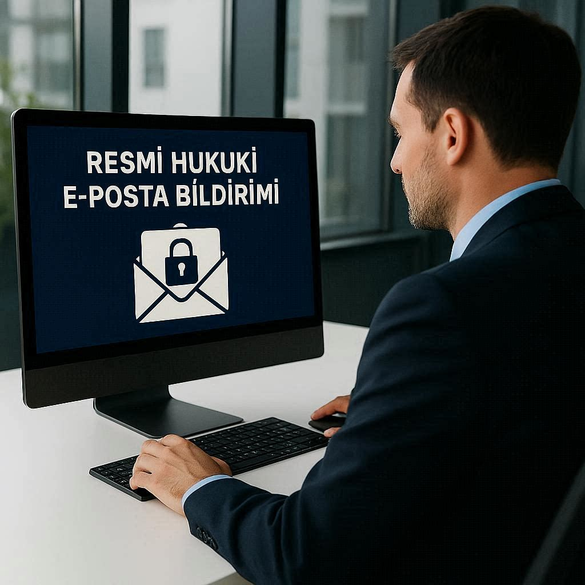

KEP (Kayıtlı Elektronik Posta) Nedir?
KEP, gönderilen ve alınan e-postaların hukuki delil niteliği taşıdığı, BTK tarafından denetlenen özel bir elektronik posta sistemidir. Normal e-postadan farkı, gönderim zamanı, alıcı bilgisi ve içerik bütünlüğünün kayıt altına alınması ve bunların mahkemelerde kanıt olarak kullanılabilmesidir.
KEP'i "dijital iadeli taahhütlü mektup" olarak düşünebilirsiniz. Karşı tarafa ulaştığı, ne zaman ulaştığı ve içeriğin değişmediği garanti altındadır.
KEP'in Yasal Dayanağı
- 6102 sayılı Türk Ticaret Kanunu (TTK) Madde 18/3: Tacirler arasındaki ihbar, ihtar ve ihtarname gibi bildirimler KEP aracılığıyla da yapılabilir.
- Elektronik Tebligat Yönetmeliği: Kamu kurumlarının tebligatları KEP üzerinden göndermesi düzenlenmiştir.
- 7201 sayılı Tebligat Kanunu: Elektronik ortamda tebligat yapılmasına olanak tanır.
KEP Almak Kimler İçin Zorunlu?
- Anonim şirketler (A.Ş.)
- Limited şirketler (LTD. ŞTİ.)
- Sermayesi paylara bölünmüş komandit şirketler
KEP Almak İsteğe Bağlı Olanlar
- Şahıs şirketleri (zorunlu değil ama faydalı)
- Serbest meslek erbabı (avukat, mali müşavir, doktor)
- Bireysel kullanıcılar
- Dernekler, vakıflar, kooperatifler
KEP Almamanın Cezası Var mı?
Doğrudan "KEP almadınız" şeklinde bir idari para cezası bulunmamakla birlikte, dolaylı yaptırımlar çok ağır olabilir:
- KEP ile gönderilmesi gereken bir tebligat, KEP adresiniz yoksa "tebliğ edilmiş" sayılabilir — süreleri kaçırırsınız.
- İhale süreçlerinde (EKAP) KEP adresi zorunludur. KEP yoksa ihaleye katılamazsınız.
- Ticaret sicil müdürlükleri KEP adresi olmayan şirketlere uyarı göndermektedir.
KEP ile Neler Yapılabilir?
- Resmi ihtarname ve ihbarname gönderimi
- Sözleşme feshi bildirimleri
- Kamu kurumlarına resmi başvurular
- İcra ve iflas tebligatları
- Fatura, tahsilat ve ticari yazışmalar
- İnsan kaynakları süreçleri (ihbar tazminatı, disiplin bildirimi)
- Sigorta ve finans sektörü yazışmaları
KEP Başvurusu Nasıl Yapılır?
Belgeleri Hazırlayın
Vergi levhası, imza sirküleri, ticaret sicil gazetesi ve kimlik fotoğrafı.
Başvuruyu İletin
WhatsApp üzerinden belgeleri gönderin, başvurunuzu biz oluşturalım.
KEP Aktif
E-imza ile onay sonrası KEP hesabınız kullanıma hazır.